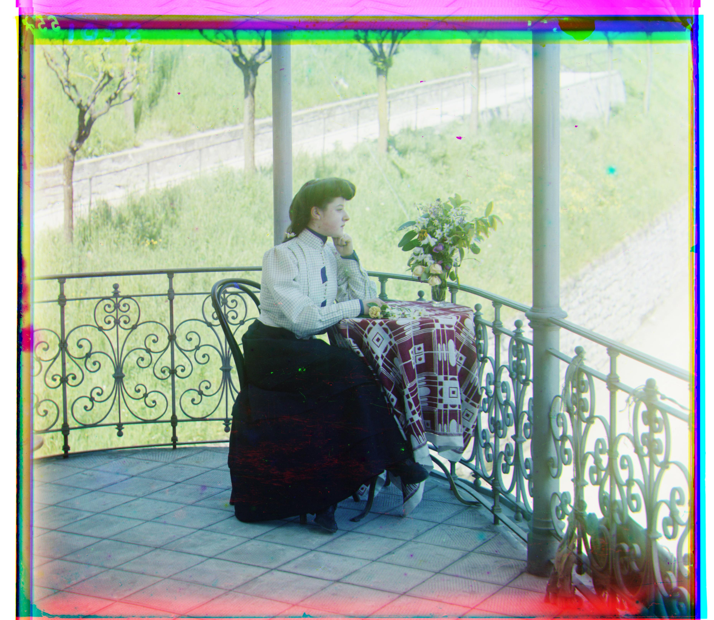
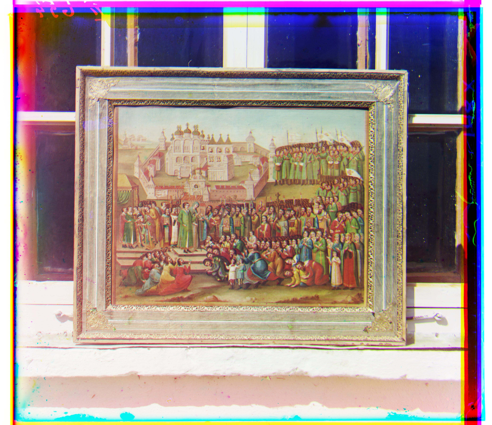

Cathedral (G=(5,2), R=(12,3))

Monastery (G=(-3,2), R=(3,2))

Tobolsk (G=(3,3), R=(6,3))

Before alignment:
The main script chooses between single-scale alignment and pyramid alignment based on either the filename extension or the image height.
Alignment:
After alignment:
SSD(I1, I2) = Σ (I1 - I2)².
A smaller value indicates better alignment.
SSD is simple and efficient when brightness and contrast are consistent across channels.NCC(I1, I2) = (Σ (I1-μ1)(I2-μ2)) / (||I1-μ1||·||I2-μ2||).
NCC is more robust than SSD when overall brightness or contrast differs between channels.The align(im1, im2, max_shift=15, metric="ssd") routine is the core exhaustive search method. Its inputs are: a candidate channel (to be shifted), a reference channel, the maximum shift window, and the chosen metric (SSD or NCC).
| Image | Method | Green Shift (dy, dx) | Red Shift (dy, dx) |
|---|---|---|---|
| cathedral | align() | (5, 2) | (12, 3) |
| monastery | align() | (-3, 2) | (3, 2) |
| tobolsk | align() | (3, 3) | (6, 3) |
Cathedral (G=(5,2), R=(12,3))
Monastery (G=(-3,2), R=(3,2))
Tobolsk (G=(3,3), R=(6,3))
The align_pyramid(im1, im2, max_shift=15, metric="ssd", scale=0.5, min_size=400) routine applies a coarse-to-fine strategy, designed for very large images (.tif). Its inputs include the two channels, the search window, the metric, the downsample scale (default 0.5), and the stopping size (default ≈ 400 pixels).
| Image | Method | Green Shift (dy, dx) | Red Shift (dy, dx) |
|---|---|---|---|
| church | align_pyramid() | (24, -2) | (55, -10) |
| emir | align_pyramid() | (44, 18) | (105, 36) |
| harvesters | align_pyramid() | (59, 10) | (123, 8) |
| icon | align_pyramid() | (41, 16) | (89, 22) |
| italil | align_pyramid() | (38, 18) | (77, 34) |
| lastochikino | align_pyramid() | (-3, -2) | (74, -7) |
| lugano | align_pyramid() | (40, -12) | (93, -28) |
| melons | align_pyramid() | (83, 4) | (177, 8) |
| self_portrait | align_pyramid() | (77, 20) | (174, 30) |
| siren | align_pyramid() | (48, -7) | (101, -20) |
| three_generations | align_pyramid() | (52, 8) | (110, 7) |
Church (G=(24,-2), R=(55,-10))

Emir (G=(44,18), R=(105,36))

Harvesters (G=(59,10), R=(123,8))

Icon (G=(41,16), R=(89,22))
Italil (G=(38,18), R=(77,34))
Lastochikino (G=(-3,-2), R=(74,-7))

Lugano (G=(40,-12), R=(93,-28))

Melons (G=(83,4), R=(177,8))

Self Portrait (G=(77,20), R=(174,30))

Siren (G=(48,-7), R=(101,-20))

Three Generations (G=(52,8), R=(110,7))

| Image | Method | Green Shift (dy, dx) | Red Shift (dy, dx) |
|---|---|---|---|
| suna_river | align() | (1, 0) | (8, -1) |
| sign | align() | (4, -1) | (10, -4) |
| kumsa_river | align() | (2, 3) | (9, 4) |
| religious_painting | align_pyramid() | (25, 3) | (69, 7) |
| religious_painting2 | align_pyramid() | (34, 20) | (55, 32) |
| three_mannequins | align_pyramid() | (54, -2) | (112, -17) |
Suna River (G=(1,0), R=(8,-1))

Kumsa River (G=(2,3), R=(9,4))

Sign (G=(4,-1), R=(10,-4))

Three Mannequins (G=(54,-2), R=(112,-17))

Religious Painting (G=(25,3), R=(69,7))

Religious Painting2 (G=(34,20), R=(55,32))
